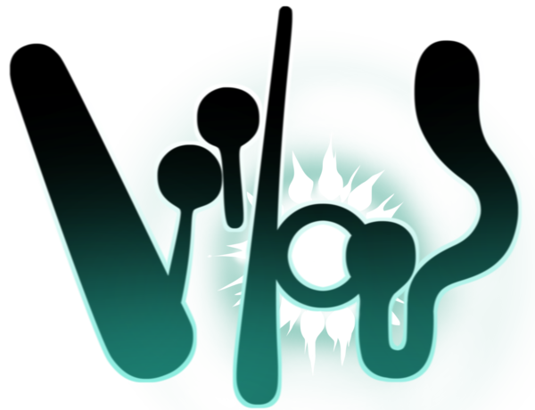
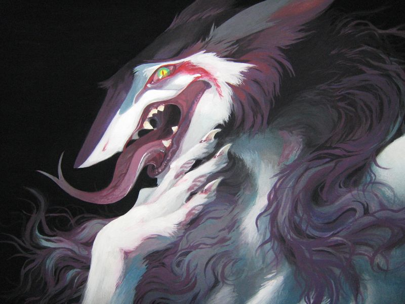
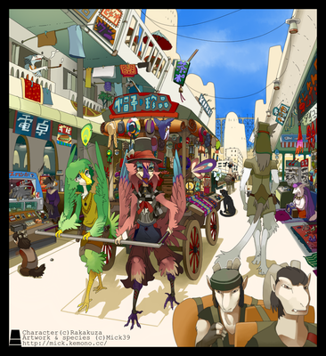
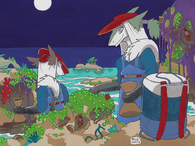
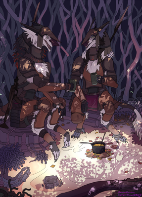
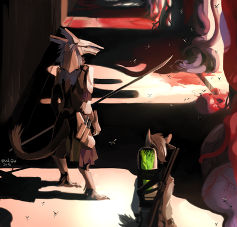
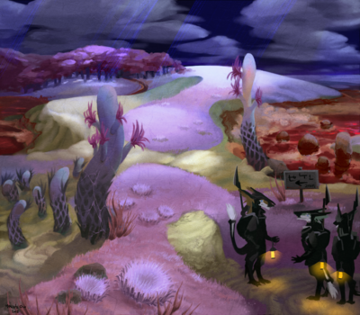
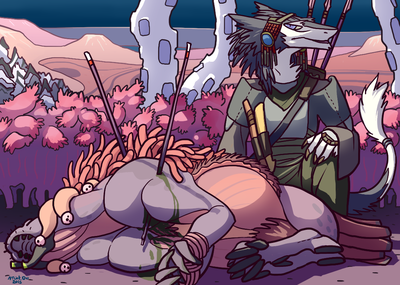
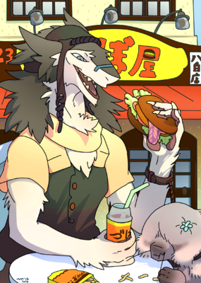

Вилос
Вилос (ビ ロ ウ ス birousu) - это название вымышленного Солнца, а также название научно-фантастического мира и вселенной, созданных двумя японскими художниками Мик Оно и Кики CR.
В каноне Старого «Вилоса» было названием главной планеты. Однако в канонических знаниях «Вилоса» новой эры - это название неподвижной звезды и главной Солнечной системы; главная планета, на которой обитают существа, теперь называется «Планета Тал».
Лого вселенной
Синопсис
Он населен чудесными существами и странной флорой, а разумные виды различного происхождения взаимодействуют друг с другом.
Основные группы организмов Вилоса делятся на две большие группы: Элтус и Талаксианцы. Самый известный вид из вселенной Вилоса, Сергалы, принадлежит к группе расы Элтус. Общий взгляд на сцену и биологию системы Вилос показывает, что планета Тал значительно отличается от Земли. Странные растения, не содержащие хлорофилла, занимают большую часть планеты, демонстрируя свои необычные характеристики в более красноватых и пурпурных тонах. На Тале обитают животные, которые также очень отличаются от животных Земли; хотя они могут иметь одно и то же имя, они совсем не похожи на своих первоначальных однофамильцев, за исключением некоторых черт или атрибутов.
История
Давным-давно на планете жили люди и существа, называемые Элтус. Однажды экологическая катастрофа достигла смертельных масштабов, и «имитирующие живые существа», выдуманные существа, называемые таликсианцами, пришли на всю планету в качестве новой экосистемы, чтобы сохранить жизнь на планете. Океаны и многие существа вида Элтус резко сократились. Тела людей Элтуса изменились и стали напоминать животных и были разделены из единой человеческой формы на три части: Сергалы, Агуднеры и Невреа.
Эоны спустя люди Эльтус и их соответствующие расы все еще сохраняют чувство признания себя "людьми", хотя в целом они не осознают свою изначальную человеческую форму и свою изначальную культуру. Планета Тал полностью превратилась в инопланетную пустыню, покрытую Таликсианскими Биомами. Люди ежедневно пытаются спасти Эльтусские биомы, чтобы возродить свою изначальную среду обитания, выживая в суровой и странной таликсийской среде.
Рождение необычного "человека", известного как Рейн Силвес, является поворотным моментом, и весь Тал обретает новую историю, которая записана как Календарь дождя. На протяжении столетней истории в рамках Календаря Рейн люди Эльтуса претерпевают бурные изменения из-за Мировой войны, которую принесла Генерал Рейн. Основные оригинальные рассказы составлены в виде сборника, чтобы показать мировоззрение Вилуса и историю бок о бок.
Генерал Рейн Сильвес
Галерея
Все произведения, которые можно увидеть на этой Wiki и Vilous.net, могут включать фанатских персонажей. В этой Wiki мы показываем произведения искусства, которые можно назвать соответствующими канону. Однако имейте в виду, что фанатские персонажи сами по себе не являются официальными персонажами оригинальных историй.
Оживленная улица "Золотого кольца"
Генерал Рейн Сильвес
Двое солдат отдыхают в тени
Элтусы исследуют заброшенную лабораторию
Поход в талаксийский биом
Сергал-охотник у пойманной добычи
Житель современного Золотого Кольца в закусочной "ZUvo"
Авторство
Все арты за авторством Mick Ono, все персонажи принадлежат их авторам. Для более детального ознакомления рекомендуется посетить официальную вики Vilous (ссылки прикреплены вверху страницы).